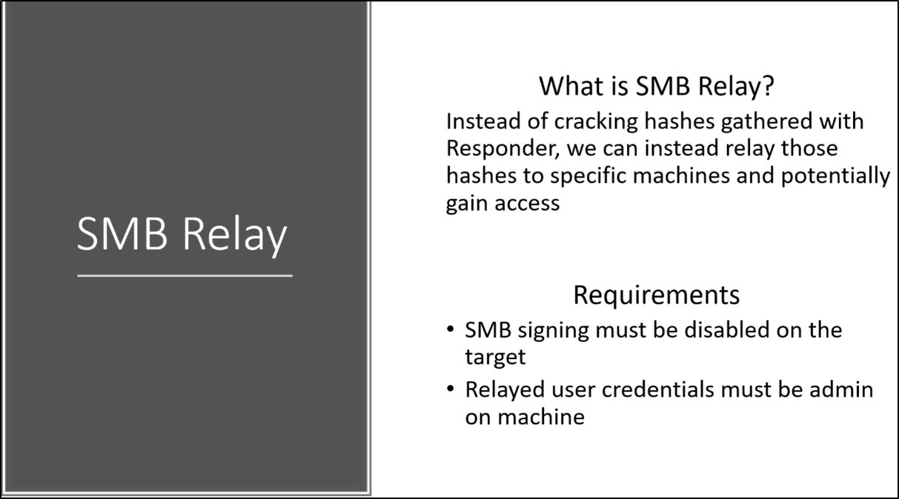

Instead of cracking the hashes, we can use them to gain access to other machines
Remember: SMB Signing has to be DISABLED
If ENABLED, there is a check on the user sending it!

What to do:
Step 1: Edit Responder.conf file
We will listen on SMB and HTTP, but not responding back:
Step 2: Launch Responder
Step 3: Set up NTLMrelayx
Here we select where we want to target and where we want to relay to:
Step 4: An event occur
Step 5: Win!!
If we are lucky, we can obtain the SAM file:
You can think of it like the shadow file for Linux
Remember: those are only LOCAL USERS!!! (Not Domain Users)